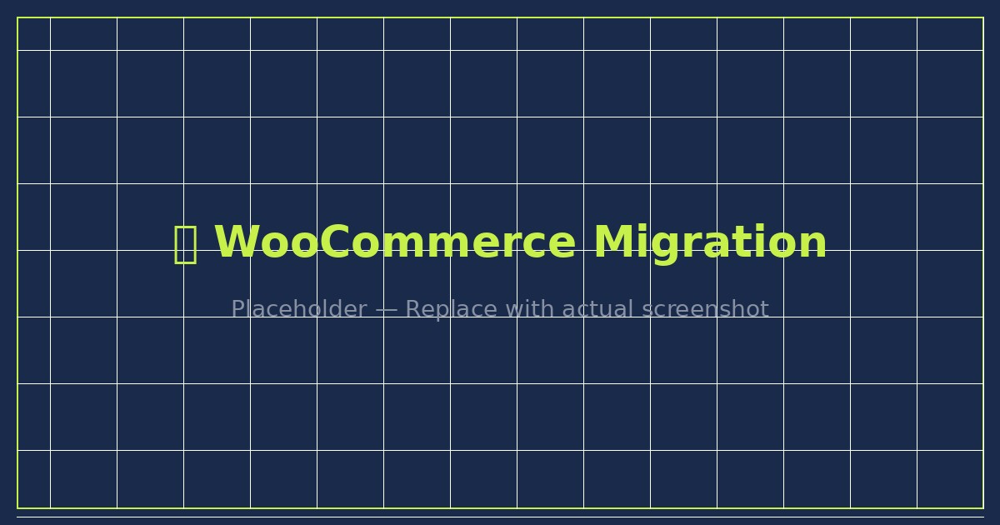
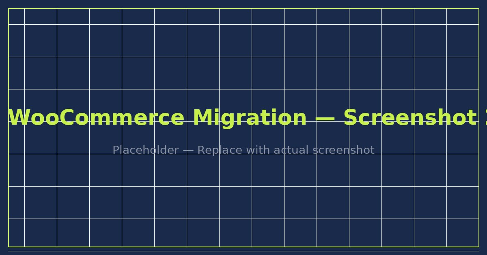

Full migration of a live eCommerce store from Shopify to WooCommerce, including product restructuring, backend optimization, shipping configuration, payment gateway setup, and SEO improvements.

The client had an existing Shopify store and needed to migrate fully to WooCommerce for more flexibility and lower ongoing costs. The store had a complex product catalog including variable products, bundle pricing, and custom shipping zones that needed to be carefully rebuilt in the new environment.
The migration required zero disruption to active orders and customers, with full data integrity maintained throughout the process.
